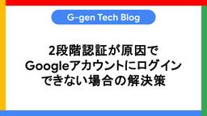
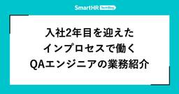
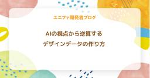
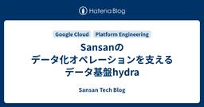
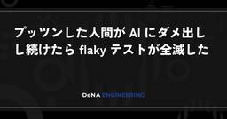
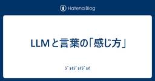

直近1週間の更新
3/23 (月)

ホルムズ海峡で機雷の除去ができるマインスイーパー「Hormuz Minesweeper」 1
1 GIGAZINE
GIGAZINE
イラン南部のホルムズ海峡を中心に、ペルシア湾からオマーン湾にかけて存在する機雷を除去するマインスイーパー「Hormuz Minesweeper」が登場しました。続きを読む...
41分前

『プロジェクト・ヘイル・メアリー』2026年洋画No.1の好スタート 国内興収4億円突破  シネマトゥデイ
シネマトゥデイ
人気作家アンディ・ウィアーのベストセラー小説を、ライアン・ゴズリング主演で実写化したSF映画『プロジェクト・ヘイル・メアリー』（全国公開中）が、2026年公開の洋画（実写・アニメを含む）において、初日の興行収入および動員数で第1位を記録する大ヒットスタートを切った。
1時間前

「Google 検索」で「たけのこの里」と検索すると……？ 「きのこの山」にも対応／ちゃんと物理演算も行う気合の入れよう【やじうまの杜】 2窓の杜
「やじうまの杜」では、ニュース・レビューにこだわらない幅広い話題をお伝えします。
1時間前

食品パッケージに「目玉」を描くことでカモメが食べ物を盗むのを防げる 1 GIGAZINE
近年はイギリスやヨーロッパ各地でカモメが都市部にも進出し始めており、人間の食べ物がカモメに奪われることが多発しています。イギリスなどに分布するヨーロッパセグロカモメを対象にした実験では、テイクアウトの食品パッケージに「目玉」を描くことで、カモメによる食品強奪を減らすことが可能だと示されました。続きを読む...
2時間前

エッジ環境でのLocal によるセキュアOCR：Grammar制約で構造化出力を行う  ABEJA Tech Blog
ABEJA Tech Blog
こんにちは、ABEJAでデータサイエンティストをしている伊藤祐希です。 今回は、セキュリティ・リソース制約下でVision Language Model (VLM) を使用する方法と検証を行いました。 サマリ 本記事の主張は以下の3点です。 エッジ（閉域／オフライン）環境でも、Local VLMで画像→構造化データ抽出は成立する ただしプロンプト制御だけでは出力形式が壊れるため、Grammar制約（JSON Schema）が必須 Visual Prompt Injection に対しても、Grammar制約は出力層での防御として機能する 扱う範囲: エッジ環境、CPU推論、構造化出力、Prom…
2時間前

トランプ大統領を支持する美しい金髪の陸軍女性兵士ジェシカ・フォスターは実在しないニセモノだった、SNS上で愛国ポルノを煽るために100％AI製 17 GIGAZINE
SNSでジェシカ・フォスターという名前のアメリカ陸軍女性兵士を名乗るアカウントが話題となりました。このアカウントはトランプ大統領への強い支持を表明し、愛国心を煽りながらセクシーな画像を投稿することで、運用開始からわずか4ヶ月で100万以上のフォロワーを獲得しましたが、実はAIによって生成された架空の存在であると専門家によって指摘されています。アメリカ陸軍には彼女の軍歴に関する記録が存在せず、画像にはAI特有の不自然な点が多数見られたため、Metaは規約違反としてこのアカウントを削除しました。続きを読む...
3時間前

もう「Windows Update」はユーザーの邪魔をしない ～Microsoftが改善を約束／都合が悪ければ必要なだけ延期、OS再起動の催促も減らす 3窓の杜
米Microsoftは3月20日（現地時間）、公式ブログ「Windows Insider Blog」で、「Our commitment to Windows quality」と題する記事を公開した。Windowsの品質を改善する取り組みの一環として、「Windows Update」による混乱を軽減する措置を盛り込むことがアナウンスされている。
3時間前

『マンダロリアン・アンド・グローグー』最新グッズ販売開始！INI西洸人、マンダロリアンに憧れ「男らしさ感じる」
シネマトゥデイ
映画『スター・ウォーズ／マンダロリアン・アンド・グローグー』（5月22日日米同時公開）の公開記念をしたポップアップ「STAR WARS SPECIAL STORE by BENELIC」の初日イベントが23日、池袋PARCOにて行われ、『スター・ウォーズ』（以下、SW）ファンとして知られる西洸人（INI）と塚地武雅（ドランクドラゴン）が出席。最新グッズをいち早く手に入れようと集まった、およそ60人のファンとともにカウントダウンを行った。
3時間前

TencentがWeChatにOpenClawベースのAIエージェントを統合した「微信ClawBot」を発表、10億人を超えるユーザーがWeCahtを通じてAIエージェントへの指示が可能 2 GIGAZINE
中国のTencentが同社のメッセージングプラットフォームであるWeChatにOpenClawを統合した新ツール「微信ClawBot」を発表しました。これにより、ユーザーはアプリを切り替えることなく、WeChatから対話を通じて様々なタスクを実行できるようになります。続きを読む...
3時間前

柳楽優弥、“全部好き”松村北斗から「憧れが止まらない」の大絶賛に照れ笑い シネマトゥデイ
俳優の柳楽優弥が23日、東京ミッドタウンホールで行われたNetflixシリーズ「九条の大罪」配信直前イベントに、松村北斗（SixTONES）と共に登壇。柳楽は松村から「嫉妬するほど」と演技を絶賛されると、松村に対して「全部好き」と返していた。イベントには、柳楽、松村のほか、池田エライザ、音尾琢真、ムロツヨシ、土井裕泰監督も参加した。
3時間前

未査読論文リポジトリのarXivがコーネル大学からの独立を宣言 1 GIGAZINE
未査読論文(プレプリント)を無料で公開するウェブサイトのarXivが、運営元のコーネル大学から独立して非営利団体に移行する方針を固めたことが分かりました。続きを読む...
3時間前

「紅の砂漠」の開発元がAIアートの使用について謝罪 1 GIGAZINE
2026年3月20日にリリースされたオープンワールド・アクションアドベンチャーゲームの「紅の砂漠」において、ゲーム内で展示されている絵画がAI生成のものではないかという指摘がRedditで話題になりました。開発元のPearl Abyssは生成AIの使用を認め、「後に差し替える制作初期段階のものが意図せず残っていた」と説明して謝罪しています。続きを読む...
3時間前

ビーバーが「炭素削減」の秘密兵器になる可能性  ナゾロジー
ナゾロジー
川辺にせっせとダムを作るビーバー。 その姿はどこか愛らしく、のどかな自然の象徴のようにも見えます。 しかし、英バーミンガム大学（University of Birmingham）の最新研究で、この小さな「建築家」が、地球規模の問題である気候変動に関わる重要な役割を担っている可能性が明らかになりました。 ビーバーが作る湿地は単なる生息地ではなく、大量の炭素を閉じ込める「天然の貯蔵庫」として機能するというのです。 もしこの効果が広い地域で再現されるなら、ビーバーは「炭素削減の秘密兵器」として、私たちの気候対策に新たな選択肢をもたらすかもしれません。 研究の詳細は2026年3月18日付で科学雑誌『Communications Earth & Environment』に掲載されています。
4時間前

ビタミンCの摂取は風邪予防・血圧低下・がんリスク軽減などに役立つのか？ 1 GIGAZINE
ビタミンCは非常によく知られた必須栄養素であり、野菜や果物などに豊富に含まれているほか、さまざまなサプリメントや飲料にも添加されています。そんなビタミンCの摂取が風邪予防や血圧低下、がんリスクの軽減などに役立つのかどうかについて、オーストラリアのマッコーリー大学自然科学部教授を務めるニール・ウィート教授らが解説しました。続きを読む...
4時間前

チャッピーは「笑ゥせぇるすまん」？ 米国チームが“AIへの悩み相談”に警告 イエスマン化に懸念 1ITmedia AI＋ 最新記事一覧
米スタンフォード大学や米カーネギーメロン大学に所属する研究者らは、AIがユーザーに過剰に同調して機嫌をとるイエスマン化のまん延と、それが人間に与える悪影響を実証した研究報告を発表した。
4時間前

ドラマ版「ハリー・ポッター」新スネイプ俳優に殺害予告 シネマトゥデイ
米HBO制作のドラマ版「ハリー・ポッター」シリーズで、新たにセブルス・スネイプを演じる俳優パーパ・エッシードゥ（35）が、殺害予告を受けていることを英 The Times 紙に明かした。
4時間前

圧縮・解凍ソフトの人気変動に注目、長年の「Lhaplus」首位がついに陥落 ～窓の杜アクセスランキング［2026/3/16～2026/3/22]【記事アクセスランキング】 窓の杜
前週に閲覧数の多かった記事を、上位10位までレポートします。
4時間前

任天堂がEUの修理する権利に対応してNintendo Switch 2をバッテリー交換可能に GIGAZINE
任天堂がEUの修理する権利に関する規則、特に2027年までに消費者向け製品の携帯型バッテリーをユーザー自身で交換可能にすることを義務付ける規則に準拠するため、Nintendo Switch 2のバッテリーを交換できるモデルを発売するべく準備を進めていると日本経済新聞が報じています。続きを読む...
4時間前

「4つの耳」をもつ黒猫が保護される【動画あり】 ナゾロジー
全身が真っ黒な黒猫は、それだけで独特の魅力があります。 しかし今回注目を集めた黒猫は、さらに唯一無二の特徴を持っていました。 アメリカで保護された子猫「ドビー」は、4つの耳を持つ非常に珍しい猫で、その不思議な姿が大きな話題を呼んでいます。 しかも注目された理由は見た目の珍しさだけではありません。 追加の耳そのものは健康上の問題を起こしておらず、必要なのは別の治療だったのです。
4時間前

AmazonがAlexa搭載スマートフォンを開発中との報道 1 GIGAZINE
Amazonが、社内で「Transformer」と呼ばれるスマートフォン開発プロジェクトに着手していると報じられました。新しいスマートフォンは音声アシスタントのAlexaと連携し、ユーザーに合わせた体験をもたらすと伝えられています。続きを読む...
4時間前

OpenAIはデスクトップ版「スーパーアプリ」を計画している GIGAZINE
OpenAIが、ChatGPT、コーディングアプリのCodex AI、AI搭載ブラウザのAtlasを1つのアプリに統合したデスクトップ版「スーパーアプリ」の開発に取り組んでいると報じられました。続きを読む...
4時間前

Google検索でリンク先タイトルが勝手にAI生成の見出しに変更される事例が報告される 1 GIGAZINE
Google検索をすると表示されるリンク先タイトル(見出し)が、サイト制作者の設定したタイトルではなく、AIが生成したものに置き換えられていることが確認されました。中には、AIが見出しを書き換えたことでタイトルの意味が丸ごと変わってしまったケースも報告されています。続きを読む...
5時間前

【ネタバレ】『プロジェクト・ヘイル・メアリー』大物俳優カメオ出演の裏側「彼女なら何でもできる」 シネマトゥデイ
ライアン・ゴズリング主演映画『プロジェクト・ヘイル・メアリー』（全国公開中）を手がけたフィル・ロード＆クリストファー・ミラー監督コンビが、同作に一瞬だけカメオ登場した大物俳優の起用経緯について、Entertainment Weekly に明かした。（以下、映画のネタバレを含みます）
5時間前
UnityEditorでアセット読み込みパスの大文字小文字違いを検出する  Happy Elementsのフィード
Happy Elementsのフィード
はじめにUnityで運用中のゲームでのアセット読み込みについて、UnityEditorでの開発時はAssetDatabaseでプロジェクト内から直ファイル読み込み、リリース時はAddressablesで開発時と同じパス指定でAssetBundleを読み込む、という形で行っているという前提です。仮想コードpublic async UniTask<T> LoadAsync<T>(string path) where T : Object{ if (useAssetBundle) { return await Addressa...
5時間前
3つの手法でToken消費量40%削減 — ADKで実践するContext Engineering 1LINEヤフー Tech Blog (LY Corporation Tech Blog
こんにちは、LINEヤフー株式会社の井上 秀一です。私は2024年4月に新入社員としてLINEヤフー株式会社に入社し、現在は社内向け Kubernetes as a Service である FKE チ...
5時間前

Cursorが最新コーディングAIの「Composer 2」は中国のMoonshot AI製Kimiをベースにしたものだと認める 2 GIGAZINE
コーディングAIの「Cursor」は、2026年3月19日に最新AIモデルの「Composer 2」を発表しました。Composer 2はコーディング性能は最先端クラスでありながら、コスト面も非常に優秀です。しかし、公開後に「Composer 2は強化学習(RL)を追加した単なるKimi 2.5」とユーザーから指摘され、CursorもComposer 2がKimiベースのAIモデルであることを認める事態となりました。続きを読む...
5時間前

GoogleがAndroidで安全なAPKサイドローディングを実現する「Advanced Flow」の詳細を発表 2 GIGAZINE
GoogleがAndroidのエコシステムにおける開放性と安全性の両立を目指し、未認証の開発者によるアプリのサイドロードをより安全に行うための新機能「Advanced Flow」の詳細を発表し、2026年8月に導入する予定を明らかにしました。Advanced Flowは2025年11月に発表された機能で、2025年8月に発表された開発者認証要件の導入をスムーズにするための安全な妥協案として位置づけられています。続きを読む...
5時間前

「鳥貴族」のノウハウ、大倉社長のAIアバターが伝授 DXで個別におすすめメニュー提案 1ITmedia AI＋ 最新記事一覧
居酒屋チェーン「鳥貴族」を展開するエターナルホスピタリティグループが、AIや顧客データを活用して事業変革を図るDX（デジタルトランスフォーメーション）戦略を発表した。
5時間前

タスクバーの縦・上置きにも対応へ ～Microsoft、今年はOSの“作りこみ”に集中すると宣言／きびきびと動作、ノイズを減らし、透明性を確保し、ユーザーに選択肢を 2窓の杜
米Microsoftは3月20日（現地時間）、公式ブログ「Windows Insider Blog」で、「Our commitment to Windows quality」と題する記事を公開した。この記事ではWindowsの品質を向上させるための新しい方針が示されており、その一環としてタスクバーを含むユーザーインターフェイスの改善がアナウンスされている。
6時間前

内蔵用HDD/SSDを外付けドライブにできるHDDスタンドが最安1,949円、Amazonでセール中【本日みつけたお買い得情報】 窓の杜
Amazon.co.jpのORICOストアでは現在、同社のスタンド型HDDケースのセールが行われています。
6時間前

UGREENの両端USB Type-Cケーブルが最大43％OFF！Amazonでセール中【本日みつけたお買い得情報】 1窓の杜
Amazon.co.jpのUGREENストアでは現在、同社のUSBケーブルのセールが行われています。両端USB Type-Cタイプのケーブル各種が割引価格で販売されています。
6時間前

エプスタイン・スキャンダルを理解するための重要な概念「Blat(ブラット)」とは？ 5 GIGAZINE
未成年者への性的搾取などで大きな事件となったジェフリー・エプスタイン氏を巡っては、裁判所の命令で公開された文書群に関係者の名前が含まれていたことから、通称「エプスタイン文書(エプスタイン・ファイル)」にも注目が集まりました。そうした人脈の構造を考える手がかりとして、作家のエルヴィラ・バリー氏が自身のYouTubeチャンネルで取り上げているのが「Blat(ブラット)」です。続きを読む...
6時間前

ミニマルなデザインで使いやすい！ シンプルなHTMLでさまざまなUIコンポーネントを実装できる超軽量ライブラリ -Oat UI 30 コリス
コリス
セマンティックなHTMLで、Webサイトやスマホアプリでよく使用されるさまざまなUIコンポーネントや要素を実装できる超軽量UIライブラリを紹介します。 デザインはシンプルでミニマル！ 依存関係は一切なく、classレスと […]
6時間前

今月に入って3度目の定例外パッチ「KB5085516」が公開、Microsoft アカウント問題を修正／「Windows 11 バージョン 25H2/24H2」向け 窓の杜
米Microsoftは3月21日（現地時間）、「Windows 11 バージョン 25H2/24H2」向けの更新プログラム「KB5085516」を公開した。今月に入って3回目の定例外（Out-of-band：OOB）リリースとなっている。
7時間前

AIエージェントが図面を読み取り3D化、寸法精度を確保するWebアプリ 1 ITmedia AI＋ 最新記事一覧
ITmedia AI＋ 最新記事一覧
renueは、2D図面から3Dモデルを生成する、Webアプリケーション「Drawing Agent」を開発した。AIエージェントが寸法や形状を読み取ることで、製造業に必要な寸法精度を確保する。
7時間前

IAM拒否ポリシー（Deny policies）を使用してプロジェクトの削除を防止する  G-gen Tech Blog
G-gen Tech Blog
G-gen の佐々木です。当記事では、IAM 拒否ポリシーを使用して Google Cloud プロジェクトの削除を防止する方法を解説します。 プロジェクト削除の防止方法 IAM 拒否ポリシー（Deny Policy） リーエン（Lien） 拒否ポリシーとリーエンの比較 拒否ポリシーの設定手順 コンソールの場合 CLI の場合 使用する設定ファイル 組織レベルの拒否ポリシー フォルダレベルの拒否ポリシー プロジェクトレベルの拒否ポリシー Terraform の場合 拒否ポリシーの削除 プロジェクト削除の防止方法 IAM 拒否ポリシー（Deny Policy） 当記事で使用する IAM 拒否ポリ…
7時間前

「スーパーナチュラル」出演女優が死去 51歳 シネマトゥデイ
ドラマ「スーパーナチュラル」「iゾンビ」などに出演したカナダ人女優のキャリー・アン・フレミングさんが、ブリティッシュコロンビア州シドニーで現地時間2月26日に死去していたことが明らかになった。
7時間前

＜ばけばけ第122回あらすじ＞ヘブン（トミー・バストウ）があるお願いをする シネマトゥデイ
高石あかり（高＝はしごだか）が主演を務める連続テレビ小説「ばけばけ」（NHK総合・月～土、午前8時～ほか）は、24日に最終週（第25週）「ウラメシ、ケド、スバラシ。」第122回が放送。あらすじを紹介する。
7時間前

ゲームのキレイな文字表示に役立っている技術「Slug」がパブリックドメイン化される＆リファレンスコードも無料公開される 2 GIGAZINE
「Slug」はEric Lengyel氏によって開発されたフォントおよびベクター画像のレンダリング技術で、3D空間内にテキストなどを低負荷で描画することができます。そんなSlugがパブリックドメイン化され、誰でも利用可能になりました。続きを読む...
8時間前

「罰を与えるには銃を使え」──10代の凶悪犯罪に加担するAI、銃撃や爆破の計画に助言 海外団体が調査 ITmedia AI＋ 最新記事一覧
カナダで起きた10代容疑者による銃を乱射して6人を殺害した事件で、容疑者は事前の計画や準備にChatGPTを利用していた。生成AIがそうした10代の犯行に簡単に「加担」してしまう現実は実験でも実証され、衝撃が広がっている。
8時間前

足りないデータは「世界モデル」が生成 産業用ロボット大手も採用するNVIDIAのフィジカルAI基盤 ITmedia AI＋ 最新記事一覧
NVIDIAはフィジカルAI実用化を促進させる新技術群とデータ基盤を発表し、産業や医療分野での開発・検証効率化を図る。
8時間前

「被害者は死んでいた方がいい」“性格の悪い弁護士”が問う法とモラルの境界 柳楽優弥×松村北斗「九条の大罪」本予告が公開 シネマトゥデイ
柳楽優弥主演、松村北斗らが共演するNetflixシリーズ「九条の大罪」のメイン予告映像とキーアートが公開された。
8時間前

データローダ×スプレッドシートで作る「権限セットマトリックス」作成事例  弁護士ドットコム株式会社 Creators’ blog
弁護士ドットコム株式会社 Creators’ blog
はじめに こんにちは。システム企画部のOです。 前回の記事では、権限管理の「個別最適」が招くブラックボックス化の問題と、まずはプロファイルから着手した現状の可視化についてお話ししました。 creators.bengo4.com 権限整理を進める中で、次なる大きな壁として立ちはだかったのが「権限セット」です。「とりあえず付与」を繰り返した結果、1人のユーザーに10個以上の権限セットがついているなんてことも... 今回は、増えすぎてしまった権限セットの実態を正確に把握するために、データローダ*1とスプレッドシートを使って「権限セットマトリックス」を作成した際の手順をご紹介します。 はじめに 1. …
8時間前

OpenROADMの論理構成と運用制御 ― APNテストベッドで探る技術と運用手法(その3) 2 NTT docomo Business Engineers' Blog
NTT docomo Business Engineers' Blog
イノベーションセンターの安井です。普段は全社検証網の技術検証、構築、運用を担当しています。 前回OpenROADMに準拠した光伝送網の概要・構築編― APNテストベッドで探る技術と運用手法(その2)にて、OpenROADMアーキテクチャにもとづく分離型 ROADM（Reconfigurable Optical Add/Drop Multiplexer）の物理構成と構築の勘所を紹介しました。 今回はその続編として、物理的に構築したROADMノードをソフトウェアからどのように制御・運用しているかを紹介します。 APNテストベッドでは、区間ごとに異なる伝送速度のトランスポンダーを使い分けており、構成…
8時間前

「Google Chrome」に26件もの脆弱性修正、致命的なものも ～「Microsoft Edge」も更新／アップデートの適用を 10窓の杜
米Googleは3月18日（現地時間、以下同）、デスクトップ向け「Google Chrome」の安定（Stable）チャネルをアップデートした。現在、Windows/Mac環境にv146.0.7680.153/154が、Linux環境にv146.0.7680.153が展開中。
8時間前


ストレスが溜まると「道に迷いやすくなる」と判明 ナゾロジー
街中を歩いていて「あれ、今どこだっけ？」と、居場所がよくわからなくなった経験はありませんか？ 特に、その経験が最近多くなったという人は、ストレスが溜まっているのかもしれません。 独ルール大学ボーフム（RUB）の最新研究で、ストレスが高まると人は道に迷いやすくなることが明らかになりました。 その原因は一体何なのでしょうか？ 研究の詳細は2026年3月12日付で学術誌『PLOS Biology』に掲載されています。
9時間前

AIモデルがクリエイティブな文章を書けないのは初期モデルに見られた創造性や独創性を抑制してビジネス用途に特化させたせいだという指摘 2 GIGAZINE
AIの能力は急速に発展しており、すでにさまざまなタスクをこなしたり複雑な計算を完了したりできるようになっていますが、クリエイティブな文章の生成はチャットAIが出始めた頃からほとんど進歩していません。AIのライティング能力がなかなか向上しない理由について、The Atlanticが専門家の意見をまとめています。続きを読む...
9時間前

「2040年に売上40兆円」の勝ち筋は？ 経産省が描く「AI・半導体・ロボット」三位一体の産業戦略 1ITmedia AI＋ 最新記事一覧
特集「AI革命、日本企業の勝ち筋」では、AIインフラを担う国内トップ企業や識者にインタビューし、AI経済圏における日本企業の展望を探っていく。1回目は概論として、生成AIも含めた半導体・デジタル産業戦略の政策立案を担う経済産業省商務情報政策局の担当者に、戦略の全体像と民間企業に期待される役割について聞いた。
9時間前

Git worktreeの運用をスキルに委ねる ―複雑さを隠蔽するClaude Codeスキル設計の実践― 30 Findy Tech Blog
Findy Tech Blog
こんにちは。ファインディ株式会社でテックリードマネージャーをやらせてもらってる戸田です。 ファインディではClaude CodeのSkillやカスタムコマンドなどをPlugins経由で社内展開しています。 tech.findy.co.jp AIに実装を任せる場面が増えるほど、開発者は複数のタスクを並列で進めたくなります。 レビュー待ちの間に別のIssueに着手したり、hotfixを即座に対応したりが良い例です。 ファインディでもGit worktreeを活用した並列開発を実践しています。 tech.findy.co.jp Git worktreeは非常に便利な機能ですが、実際にチームで使おうと…
9時間前

「ばけばけ」高石あかり、セリフ覚えに変化 トキ役で得た確かな成長 シネマトゥデイ
連続テレビ小説「ばけばけ」（NHK総合・月～土、午前8時～ほか）が、いよいよ最終週に突入する。1年にわたる撮影期間を通して、主人公・トキと向き合ってきた高石あかり（高＝はしごだか）が、朝ドラヒロインを経験しての変化や、長く共演してきたトミー・バストウ（ヘブン役）への思いを語った。
9時間前

ExcelのLEFT/MID/RIGHT関数は複雑すぎる！ もっと楽に文字列を分割・抽出する関数【残業を減らす！Officeテクニック】 窓の杜
1つのセルに複数の情報が入った表を扱うことがありますよね。記号やスペースなどで区切られていることが一般的です。
9時間前

生成AIツールを賢く活用するアイデア交流の場「Google AI学生コミュニティ」の参加登録が開始／インターンシッププログラム「キャンパスアンバサダー」の募集も 窓の杜
Googleは3月18日（日本時間）、全ての大学生および大学院生を対象とした「Google AI学生コミュニティ」の参加登録受付を開始した。このコミュニティは、昨年開催された「Google AI学生アンバサダープログラム」の主な交流の場であったもので、Discordを拠点とした自由なコラボレーション空間となっている。全国の学生同士でGeminiなどの生成AIツールを賢く活用するアイデアを交換し、学生自身の可能性を広げるための機会を提供することを目的としている。
9時間前

恋愛での「無関心」が”かなり危険”な理由とは？ 1 ナゾロジー
「自分の恋人は、あまり怒らないし、干渉もしてこない。自由にさせてくれるし、居心地がいい」 そんな関係を、理想的だと感じている人は少なくないでしょう。 ケンカも少なく、衝突もない。穏やかで安定した関係に見えます。 しかし、その“穏やかさ”は本当に安心できるものなのでしょうか。 もし相手が、あなたに対して強い好意も不満も抱いていないとしたら、それは単なる優しさではなく、「無関心」という別の状態かもしれません。 オランダの自由大学アムステルダム校（VU）の研究チームは、恋人に対してポジティブな感情もネガティブな感情もほとんど抱かない「無関心」が、関係の質や本人の心の状態とどう結びつくのかを調べました。 研究では、複数の調査と3年間の追跡データを使って、この状態が関係満足度の低下や抑うつ傾向などと関連することが示されています。 詳細は、2026年1月8日付の学『Personality and S…
9時間前

神木隆之介、初の月9で北村匠海と初共演 4月期「サバ缶、宇宙へ行く」でJAXA職員役 シネマトゥデイ
北村匠海主演のフジテレビ系月9ドラマ「サバ缶、宇宙へ行く」（4月13日スタート、毎週月曜21時～）に神木隆之介が出演することが明らかになった。神木は同作で北村演じる高校教師や生徒たちと対峙するJAXA職員にふんし、月9ドラマへの出演は初。北村と初共演となる。
9時間前

マスク氏、次世代半導体工場「Terafab」発表 計算リソースは宇宙空間へ 172ITmedia AI＋ 最新記事一覧
イーロン・マスク氏は、次世代半導体工場「Terafab」の構想を発表した。テキサス州に建設予定の同施設は、2nmプロセスを採用し、ロジックからパッケージングまでを統合する。製造されたチップは人型ロボットや自動運転、AI衛星に活用され、将来的には計算リソースの大部分を宇宙へ配置する計画だ。
9時間前

300億年で1秒しかずれない水準のストロンチウム光格子時計が完成、「秒」の再定義に必要な水準へ GIGAZINE
中国科学技術大学のジーポン・ジア氏らの研究チームが、大学で運用してきたストロンチウム光格子時計に改良を加え、装置や環境によるずれの見積もりを9.2×10の-19乗まで小さくしたと報告しました。ジア氏らはこの性能が将来の「秒」の再定義で求められる水準に達したとしています。続きを読む...
10時間前

『トイ・ストーリー』公開から丸30年 唐沢寿明＆所ジョージ「一作だけだと思った…」シリーズの歴史を回顧 シネマトゥデイ
ディズニー＆ピクサー映画『トイ・ストーリー』1作目の日本公開（1996年3月23日）からちょうど30年となった23日、主人公・ウッディと相棒バズ・ライトイヤーの日本版声優を担当してきた唐沢寿明と所ジョージが、シリーズ30年間を振り返る特別映像が公開された。
10時間前

VS Codeチームは週次リリースをどう実現したのか AIエージェント活用で見えた6つのポイント 2ITmedia AI＋ 最新記事一覧
VS Codeが月次リリースから週次リリースへ移行するためにエージェントをどう活用しているのか。エージェントを使って開発する全ての人に参考になる内容だ。
11時間前

日東電工、ニッチ極め1兆円／JERA、LNG網再構築／高専、「戦略17分野」の先兵（2026年3月23日版） (日経ビジネスAUDIOモーニング)  日経ビジネス電子版 最新記事
日経ビジネス電子版 最新記事
［新連載］日東電工、新陳代謝生み続ける髙﨑メソッド ニッチ極め1兆円企業／JERA、9兆円投資で米国シフト ウクライナ危機教訓に強靱LNG網を再構築／半導体人材の空白埋める高専、全国32校で一斉育成 「戦略17分野」の先兵に、他
11時間前
日米首脳会談、エネルギー・重要鉱物に込められた「対中国」戦略的意義 (細川昌彦 深層パワーゲーム) 日経ビジネス電子版 最新記事
今回の日米首脳会談はイラン情勢やホルムズ海峡も焦点となり日本は厳しい「踏み絵」の局面に立たされたが、高市早苗首相は巧みに乗り切った。さらに本来の趣旨である「中国を念頭に置いた日米協力」においても大きな成果となった。
11時間前
「イノベーターの本質は芸術家と同じだ」シュンペーターの予言とジョブズ (Books) 日経ビジネス電子版 最新記事
イーロン・マスク、スティーブ・ジョブズ、ジェフ・ベゾス……。天才的なイノベーターに共通する「思考の型」があります。第一原理思考、アナロジー思考、パラノイア思考、物語思考、反逆思考、情熱思考、SF思考、アート思考などの思考法を解剖した書籍『天才思考 世界を変えるイノベーションを生む10の思考法』から一部を抜粋・再編集してお届けします。今回はイノベーション理論で知られるヨーゼフ・シュンペーターが重視していた「人間としてのイノベーター」について取り上げます。
11時間前
［新連載］日東電工、新陳代謝生み続ける髙﨑メソッド ニッチ極め1兆円企業 (インダストリー羅針盤) 1 日経ビジネス電子版 最新記事
スマートフォンなど多様な電子機器向け部品の接着・剥離用材を手掛ける日東電工。数多くのニッチ市場で世界トップを取るビジネスモデルで1兆円企業にまで成長した。日東電工はどうやってニッチな新領域を開拓し続けているのか。12年にわたって経営トップに立つ髙﨑秀雄社長が磨いてきたその戦略に迫る。
11時間前
半導体人材の空白埋める高専、全国32校で一斉育成 「戦略17分野」の先兵に (今こそ高専、採用競争の舞台裏) 日経ビジネス電子版 最新記事
「日の丸半導体」復活に向け、全国の高専が一丸となって半導体人材の育成を進めている。かつての全盛期を知る技術者が退職し、企業内では教える側に立つ人材が極端に不足していることが背景にある。
11時間前
中東リスクに向き合うJERA 米国シフトで9兆円投資、強固なLNG網を再構築 (JERAの覚悟) 日経ビジネス電子版 最新記事
ホルムズ海峡封鎖で大きく揺らぐエネルギー安全保障。国内の発電最大手で、LNG取り扱い量では世界最大級であるJERAは、有事への対策を打ってきた。脳裏にあるのはウクライナ危機での教訓だ。米国シフトで強固なLNG調達ポートフォリオを築く。
11時間前
「無収入工程」を洗い出して値付け 価格は高いが顧客が増える産廃会社 (日経トップリーダー) 日経ビジネス電子版 最新記事
売り上げにつながらない「無収入工程」を洗い出した産廃会社。各工程に値付けをし、バックオフィス業務を「収入工程」に転換した。営業社員はいないが、外部ライターを組織化した情報発信力で新規客も次々に開拓する。
11時間前
売った製品にも人権リスク 中国・新疆ウイグル自治区のカメラに日本企業の部品 (「守り」と「攻め」の人権対応)
1 日経ビジネス電子版 最新記事
人権リスクへの対応は製品を売った後も怠ることはできない。何にどう使われるのかまで目配りし、悪用を防ぐプロセスを築くことが重要になる。
11時間前

［クイズ］ノジマの初任給、最高40万円に 対象者の条件は？ (日経ビジネス教養クイズ) 日経ビジネス電子版 最新記事
家電量販大手のノジマが、一部の新卒者向けに初任給を最大40万円に引き上げます。その条件とは？
11時間前
シニアのキャリア再構築 カギは「カネと地位」から「働きがい」への転換 (真のリーダーになるための課長塾) 日経ビジネス電子版 最新記事
ミドル～シニア期以降は自分のよりどころを肩書や給与の額ではなく、働きがいに変えていくことが必要です。
11時間前

100万種類以上のランキング集計を支える Sidekiq チューニング  Blog on DeNA Engineering
Blog on DeNA Engineering
はじめに こんにちは、ライブコミュニティ事業本部 Pococha 事業部バーティカルシステム部第一グループの菅野です。スレッド数を増やせば速くなる ——そう考えて、バックグラウンドジョブシステム Sidekiq の同時実行スレッド数を 50 に設定していましたが、10 に減らしたところ、むしろパフォーマンスが改善しました。 本記事では、その背景にある GVL の仕組みと、大量のランキング集計を効率化したチューニング事例を紹介します。最近、ライブストリーミングアプリケーション Pococha に 「ぽこランキング」 という機能のべータ版が追加されました。 この機能は、ユーザの「応援」をランキングとして可視化するもので、100万種類以上のランキングを30分おきに集計します。
16時間前
【内定者インタビュー】最先端AI技術の社会実装に挑む！フューチャー「Engineer Camp」のリアル  フューチャー技術ブログ
フューチャー技術ブログ
<h1 id="はじめに"><a href="#はじめに" class="headerlink"
16時間前
3/22 (日)

【ネタバレ】「リブート」明かされた裏切り者にネット騒然「やっぱり」「許さん」 シネマトゥデイ
鈴木亮平主演の日曜劇場「リブート」（TBS系、毎週日曜よる9時～）の第9話「夫婦」が22日に放送、これまで存在が示唆されていた警察内部のスパイが明かされ、X（旧Twitter）では視聴者から「許さん」などの声があがった。また、第10話が最終回の20分拡大スペシャルになることも明かされた。（ネタバレあり。以下、第9話までの内容に触れています）
16時間前

ありとあらゆるAIモデルを組み合わせることができる「LibreChat」で「ウェブ検索」「画像自動生成」をやってみる、無料でセルフホスト可能 49 GIGAZINE
ChatGPTやClaude、GeminiなどのAIチャットサービスは便利ですが、それぞれのサービスを行き来する手間がかかります。無料でセルフホスト可能な「LibreChat」は、ありとあらゆるAIモデルをひとつの画面でまとめて扱える統合プラットフォームです。今回はLibreChatの機能のうち「ウェブ検索」と「画像生成」を試してみました。続きを読む...
17時間前

消費者の半数は「生成AIを使用しないブランド」を好む傾向がある 25 GIGAZINE
調査会社・ガートナーの調査により、アメリカの消費者の半数は消費者向けコンテンツで生成AIの使用を避けるブランドを好む傾向があることがわかりました。続きを読む...
17時間前

「眼鏡は魅力を下げるのか？」あるタイプの眼鏡だけ魅力が上がる 4 ナゾロジー
眼鏡は一般的に魅力を下げるアイテムと認識されており、眼鏡を避けるためにコンタクトレンズを利用する人も多く存在します。 ただ、世の中には根強い眼鏡っこ好きも存在しています。 では、眼鏡が魅力に与える影響は、きちんと調査するとどういう結果になるのでしょうか？ オーストリア、ウィーン大学のヘルムット・レーダー氏（Helmut Leder）らの研究チームは、顔の印象に眼鏡が与える影響を検討し、この疑問に対する答えを報告しています。 この研究では、参加者に、同一人物の眼鏡なし、眼鏡あり、フレームレス眼鏡の顔写真を見てもらい、その魅力度や知的さ、信頼性などを評価してもらいました。 その結果、眼鏡を掛けていると魅力度は低下したと評価されるが、代わりに知的で、成功しているように見えると評価されることが確認されました。 やはり眼鏡は魅力を下げるデバフアイテムなのでしょうか？ ただし研究チームは、縁なし眼鏡…
18時間前

優れた創作に「苦しみ」は欠かせないのか？ 1 GIGAZINE
作家や芸術家の来歴や伝記などを読んでいると、過去に壮絶な苦しみを味わっていた経験があったり、人生のどん底にあった時に優れた作品を作っていたりすることがあります。そのため、「優れた創作には苦しみが必要」と考える人もいるかもしれません。実際に創作に苦しみは必要なのかどうかについて、精神分析医のグラント・ブレンナー氏が解説しました。続きを読む...
18時間前

白亜紀の海で「大型捕食者に噛みついた巨大魚」の化石を発見 ナゾロジー
「海の大型捕食者」と聞くと、他の生物に襲われることはほとんどない、絶対的な強者を思い浮かべるかもしれません。 ところが約8000万年前の白亜紀の海では、その常識が通用しなかった可能性が明らかになりました。 なんと、海の頂点に君臨していたはずの大型首長竜の首に、別の巨大魚の歯が深々と突き刺さった状態の化石が見つかったのです。 研究の詳細はテネシー大学（The University of Tennessee）により、2026年3月12日付で科学雑誌『Journal of Vertebrate Paleontology』に掲載されています。
19時間前

ミニPCのストレージを増設してみた＆増設中にWi-Fi用の線が抜けたらこうやって戻す 2 GIGAZINE
デスクトップPCより省スペースでノートPCより拡張性の高いミニPCは、ビジネスパソコンとしても「第三の選択肢」として注目を集める存在です。そんなミニPCを作業用PCとして導入を検討する上で拡張性を活かしたストレージの増設を実際に行い、ベンチマークテストで性能を確認してみました。続きを読む...
19時間前

あのワープロソフト「一太郎」に「写真の顔を自動検出して隠せる機能」が追加されたので使ってみた 2 GIGAZINE
ジャストシステムのワープロソフト「一太郎」は1985年からアップデートが続いているソフトですが、「一太郎というワープロソフトの存在は知っているけど、どんな機能があるのかは知らない」という人も多いはず。2026年2月6日に登場した一太郎2026ではAIで音声を文字起こしする「JUSTボイスライター」や、画像の顔を自動的に隠せる「プライバシーフィルター」などの便利機能が多数追加されました。実際に一太郎2026を使う機会を得られたので、まずはプライバシーフィルターの使い勝手を確かめてみました。続きを読む...
19時間前

浅井長政が見せた“愛の証”に衝撃 「無茶しすぎ」「これは惚れる」 シネマトゥデイ
仲野太賀主演による大河ドラマ「豊臣兄弟！」（NHK総合・毎週日曜午後8:00ほかで放送中）の22日放送・第11回では織田信長の妹・市（宮崎あおい※崎＝たつさき）と夫・浅井長政（中島歩）のロマンス展開が注目を浴び、長政がとった愛の証と言わんばかりの行動が注目を浴びた（※一部ネタばれあり）。
19時間前

「豊臣兄弟！」吉岡里帆、初登場！大河ドラマ初出演で秀長の妻役【第12回あらすじ】 シネマトゥデイ
仲野太賀主演による大河ドラマ「豊臣兄弟！」（NHK総合・毎週日曜午後8:00ほかで放送中）の第12回に、吉岡里帆演じる小一郎（仲野）の妻となる慶（ちか）が初登場することが明らかになった。
19時間前

大泉洋『探偵はBARにいる』新作、アクション増加でぼやき節「トム・クルーズに観てほしい」 シネマトゥデイ
俳優の大泉洋と松田龍平が22日、東映東京撮影所で行われた『探偵はBARにいる』シリーズ最新作『BYE BYE LOVE 探偵はBARにいる』製作発表会見に、白石和彌監督と共に出席。劇中には白石監督らしいハードなシーンが含まれていることを明かし「トム・クルーズがみたらキャッキャ喜びますよ」と独特な表現で期待をあおった。
19時間前

大泉洋『探偵はBARにいる』復帰に感無量「やっぱりこの探偵が好き」“若き日の恋”描く相手役は「驚くような方」 シネマトゥデイ
俳優の大泉洋が22日、東映東京撮影所で行われた『探偵はBARにいる』シリーズ最新作『BYE BYE LOVE 探偵はBARにいる』製作発表会見に、共演の松田龍平、白石和彌監督と共に出席。大泉は9年ぶりとなるシリーズ最新作に「やっぱり私は、この探偵が好きなんだ」としみじみ語った。
20時間前

『ウィキッド』超高難度だった「ザ・ガール・イン・ザ・バブル」の撮影 「このナンバーだけで2年費やした」 シネマトゥデイ
映画『ウィキッド ふたりの魔女』に続き、第2部にして完結編『ウィキッド 永遠の約束』のメガホンを取ったジョン・M・チュウ監督がインタビューに応じ、技術的な難易度の高さから計画から実行までに2年を費やしたというグリンダ（アリアナ・グランデ）の新曲「ザ・ガール・イン・ザ・バブル」のミュージカルシーンの秘話を明かした。
21時間前

大泉洋＆松田龍平『探偵はBARにいる』9年ぶり新作、12月25日公開決定 監督は『孤狼の血』白石和彌 シネマトゥデイ
大泉洋と松田龍平が共演する映画『探偵はBARにいる』シリーズの第4弾となる最新作『BYE BYE LOVE 探偵はBARにいる』の製作が、22日に大泉の東映東京撮影所で行われた製作発表会見で発表された。大泉と松田のコンビが9年ぶりに復活し、『孤狼の血』白石和彌監督のメガホンのもと、12月25日の公開を目指す。発表にあわせてコンセプトビジュアルも公開された。
21時間前

目黒蓮、実写『SAKAMOTO DAYS』完成披露にカナダからリモート参加 大スクリーンに映り照れ笑い シネマトゥデイ
目黒蓮が主演する映画『SAKAMOTO DAYS』（4月29日公開）の完成披露が22日、都内で行われた。現在カナダで新作を撮影中の目黒は、リモートで舞台あいさつに参加。巨大スクリーンに映し出された姿を共演者や監督から「これが噂のデカ目黒だ！」といじられた目黒は「今回はこういう変わった形で、こんなでかいスクリーンで参加させてもらって……。すごくデカく映っていますけど皆さんで笑っていただけたら」と照れ笑いで客席にあいさつしていた。この日は、高橋文哉、横田真悠、戸塚純貴、塩野瑛久、福田雄一監督も登壇した。
1日前

「女性の涙」には男性の攻撃性を鎮める匂い成分が含まれている 4 ナゾロジー
女性の涙には男の怒りを鎮める作用があったようです。 イスラエル・ワイツマン科学研究所（WIS）の23年の研究で、女性が流した涙の匂いを嗅ぐと、生理食塩水を嗅いだときに比べて、男性の攻撃性が40%以上も低下するという興味深い結果が報告されています。 実際、磁気共鳴機能画像法（fMRI）を使った脳スキャンでも、女性の涙を嗅いだときに攻撃性に関わる脳領域の活動が減ったという。 ただ、涙は無臭ですがそれでも涙に含まれる化学成分はヒトに影響を及ぼしているようです。 これは涙が単に目を守るためだけの存在ではない可能性を示しています。 研究の詳細は、2023年12月21日付で科学雑誌『PLOS Biology』に掲載されています。
1日前

「汚職」は民主主義国家において独裁国家よりも社会的信頼をより大きく損なう 2 GIGAZINE
政治における「汚職」は社会の信頼を損なう要因ですが、その社会的影響の大きさは政治体制によって異なる可能性があることを示す研究結果が報告されました。続きを読む...
1日前

溺れた子供の命を救う「人工呼吸」が減っている ナゾロジー
子供たちにとって海や川で遊ぶことは楽しいことです。 しかし時には、ほんの一瞬の油断が深刻な事故につながることもあります。 親や周囲の大人たちは、どんなことを心得ておくべきでしょうか。 岡山大学の研究グループは、溺れた子どもの心停止に対して市民がどのような蘇生を行ってきたのかを、日本全国のデータを使って調べました。 その結果、本来重要とされる人工呼吸を含む心肺蘇生が年々減り、代わって胸骨圧迫のみの蘇生が増えていることが分かりました。 さらに、胸骨圧迫のみの蘇生は、人工呼吸を含む蘇生に比べて、30日以内の死亡や脳の状態が悪くなることと関連していました。 本研究は2026年3月10日、学術誌『Resuscitation』に掲載されました。
1日前

「北方謙三 水滸伝」織田裕二＆反町隆史のカリスマ 亀梨和也が雪山で壮絶撮影…撮影秘話 シネマトゥデイ
シリーズ累計発行部数1,160万部を突破する北方謙三の大河小説を実写化する連続ドラマ「北方謙三 水滸伝」より、宋江役の織田裕二、晁蓋役の反町隆史、林冲役の亀梨和也ら主要キャストのキャスティング秘話が公開された。
1日前

ライアン・ゴズリング、パペットの相棒相手にアドリブ『プロジェクト・ヘイル・メアリー』を支えたロッキーの存在 シネマトゥデイ
『オデッセイ』の原作者アンディ・ウィアーのベストセラーを実写化した映画『プロジェクト・ヘイル・メアリー』（公開中）で、主人公のグレースを演じたライアン・ゴズリング。片道切符のミッションに挑むグレースが、宇宙の果てで出会った“相棒”と絆を育む場面のリアリティあふれる演技は、実在のパペットを相手にしたことで実現したという。
1日前

AppleがiPhone向けのプロ仕様カメラ・Halideの開発元を買収したがっていたことが共同創業者による訴訟で明らかに 2 GIGAZINE
iPhone向けのプロ仕様カメラアプリとして人気を博すHalideの開発元であるLux Opticsの共同創業者のひとりであるベン・サンドフスキー氏が、同じく共同創業者であり記事作成時点ではAppleで働いているセバスティアン・デ・ウィット氏を訴えました。この訴訟から、AppleがLux Opticsの買収を目論んでいたことが明らかになっています。続きを読む...
1日前

＜ばけばけ第121回あらすじ＞胸の痛みを告げるヘブン（トミー・バストウ） シネマトゥデイ
高石あかり（高＝はしごだか）が主演を務める連続テレビ小説「ばけばけ」（NHK総合・月～土、午前8時～ほか）は、23日に最終週（第25週）「ウラメシ、ケド、スバラシ。」第121回が放送。あらすじを紹介する。
1日前

生見愛瑠の底知れぬ魅力 『君歌』三木孝浩監督が見た、俳優としての可能性 シネマトゥデイ
道枝駿佑（なにわ男子）が主演、『今夜、世界からこの恋が消えても』（2022／以下『セカコイ』）チームが再集結した映画『君が最後に遺した歌』。歌を奏でる男女の10年にわたる恋模様を描く同作のメガホンを取った三木孝浩監督がインタビューに応じ、同作でヒロインを務めた生見愛瑠と、彼女が歌唱する楽曲について語った。
1日前

ドライブスルーAIで注文するとジャンキーな食べ物を選んでしまいがちになるという研究結果 1 GIGAZINE
昨今、ドライブスルーに音声AIを導入するファストフード店が増えています。新たな研究で、AIとやりとりする顧客は、より高カロリーな食品を注文しやすくなることが判明しました。続きを読む...
1日前

容姿が人生の満足度に与える影響は、女性よりも男性の方が大きいと判明 1 ナゾロジー
なんとなく見た目を気にするのは女性で、男性は適当にしている、という印象を抱く人は多いかもしれません。 しかし朝、鏡の前で髪型を整えたり、念入りにスキンケアをしたりする男性は珍しくありません。 現代の日本でも男性向けコスメ市場が急成長しているように、こうした「見た目への投資」は何も女性だけのものではありません。 一般的に「美人は人生のイージーモード」などと言われるように、容姿の恩恵をより強く受けるのは女性であるというイメージを抱きがちですが、実は社会科学の最新の研究は、こうした私たちの思い込みとは異なる事実を示しています。 チェコ共和国にあるチェコ科学アカデミー社会学研究所（Institute of Sociology, Czech Academy of Sciences）のマイケル・L・スミス（Michael L. Smith）博士らの研究チームは、容姿の良さが人生の満足度にどのような影…
1日前

ネコ映画としても楽しめる？イエス・キリストの壮大な物語『キング・オブ・キングス』に登場する愛くるしいネコの魅力 シネマトゥデイ
北米で韓国映画として歴代最高収入を記録し話題を呼んでいるアニメーション映画『キング・オブ・キングス』（3月27日公開）より、劇中に登場するネコのウィラにまつわる愛らしい本編映像とエピソードが公開された。
1日前
3/21 (土)

Excelが「1900年はうるう年」として誤って扱う理由とは？ 17 GIGAZINE
Microsoftの表計算ソフトであるExcelでは、実際にはうるう年ではない1900年がうるう年として扱われています。Microsoftはその理由を過去の表計算ソフトとの互換性にあると説明しており、1991年にExcelチームで働き始めたJoel Spolsky氏も、2006年に自身のブログで当時の事情を記録していました。続きを読む...
2日前

「自殺を考える人」は血中に検出可能な変化があり、しかもその成分は男女で違う 230 ナゾロジー
自殺の認識が変わるかもしれません。 23年に米国のカリフォルニア大学（UC）で行われた研究によって、男女で異なる5つの化合物の血液濃度を測定するだけで、自殺念慮の高い人を90%以上の精度で特定できることが示されました。 また研究では男女共通の自殺念慮の因子として「ミトコンドリアの機能低下」を示す化合物も特定されました。 ミトコンドリアは細胞内のエネルギー生産工場として機能しているだけでなく、脳と体の間の信号を調整する「ミトコンドリア情報処理システム（MIPS）」の中枢を担っており、機能不全は全身の細胞に大きな悪影響を及ぼすと考えられています。 このことから研究者たちは、プレスリリースにて「自殺未遂は実際には、細胞レベルで耐えられなくなったストレスを（死によって）止めようとする、より大きな生理学的衝動の可能性がある」との仮説を提唱しています。 研究内容の詳細は2023年12月15日に『Tr…
2日前

満腹でも食べてしまう理由が脳スキャンで判明 24 GIGAZINE
「深夜の間食がやめられない」「満腹なのにお菓子に手が伸びてしまう」という人は、実は意志が弱いのではなく、脳の仕組みによってそんな風になっているのかもしれないという研究結果が公表されました。続きを読む...
2日前

机に固定できるUSBポート付き電源タップが便利 38 GIGAZINE
PCやスマートフォンなど大量のデバイスを同時に使うためにデスクの上に電源タップを置いてコンセントを確保している人は多いはず。しかし、一般的な電源タップには「電源タップ自体のコードが邪魔」とか「電源タップからコードを抜き差しする際に、電源タップが浮かないように両手を使う必要がある」といった問題があります。サンワサプライが2026年1月16日発売したクランプ固定式電源タップなら、デスクの端っこに電源タップを固定できるだけでなく、最大65Wで給電できるUSBポートも確保できるとのこと。便利そうだったので、実機を借りて使ってみました。続きを読む...
2日前

NFCタグの使い方とWeb NFC API Ubie テックブログのフィード
NFC（Near Field Communication）タグを触る機会がありました。NFCは数センチの距離で通信する近距離無線通信の規格です。NFCという技術自体はスマホ決済などで日常的に使われていると思いますが、自分でタグを書き込んで使ったことがある人は少ないのではないかと思います。この記事では、NFCタグの基本的な仕組みと使い方をまとめつつ、ウェブブラウザからNFCを直接読み書きできる Web NFC API のサンプルを紹介します。シールタイプのNFCタグ (wikimedia) NFCタグの使いどころ「かざすだけ」で何ができるのか、具体的な活用例をいくつか見ていきま...
2日前

ページをブックマークしてHTML・スクショ画像・PDFなどで自動保存して検索・ハイライトなどの注釈・複数人での共有・スマホアプリからの利用・RSSの自動保存・AIによる自動タグ付けができる「Linkwarden」、無料でセルフホストも可能 138 GIGAZINE
気になる記事やブログ、技術解説サイトなどブックマークに保存したサイトを後で見ようとした際に、ページが削除されているケースがあります。「Linkwarden」を使うと、ブックマークと同時にページをPDF化し、スクリーンショットを保存した上、複数人との共有や複数デバイスでの利用が可能となり、多機能なブックマーク管理サービスが利用できます。以前から3年近くが経過してまったく違う次元までレベルアップしたので改めて使ってみました。続きを読む...
2日前
Gemini EnterpriseでAgent EngineのADK AgentがOAuth Toolを使う方法 pixivのフィード
はじめにADK Web[1]からGemini Enterpriseに移行することで、よりセキュアに、見やすいフロントで運用したいケースは多いと思います。この記事では、Gemini EnterpriseでCustom Agent(ADK Agent on Vertex AI Agent Engine)でOAuth Toolを使うための実装方法について記述します。免責事項本記事は半分程度、個人の備忘録的な記事です。執筆時点(2026年3月21日)の情報であり、更新予定はありません。Gemini Enterpriseの仕様変更により、推奨される実装方法が変わる可能性があります。...
2日前

「ドラクエX」が生成AIキャラクター導入へ Gemini 3 Flash活用の「おしゃべりスラミィ」 131ITmedia AI＋ 最新記事一覧
スクウェア・エニックスが、MMORPG「ドラゴンクエストX オンライン」（DQX）に、生成AIを活用した対話型パートナー機能「おしゃべりスラミィ」を導入する。GoogleのAIモデル「Gemini 3 Flash」とリアルタイム対話API「Gemini Live API」を組み合わせ、プレイヤーと音声で対話できるAIキャラクターを実現するという。
2日前

【解説＆考察】『デューン 砂の惑星PART3』原作にない描写も 特報から見えた11のこと シネマトゥデイ
ティモシー・シャラメ主演のSF超大作シリーズ完結編『デューン 砂の惑星 PART3』（12月18日日米同時公開）の特報が、日本時間18日に全世界公開された。ドゥニ・ヴィルヌーヴ版『デューン』三部作の完結編にして、作家フランク・ハーバートの小説「デューン 砂漠の救世主」を映画化する同作の特報には、一体何が描かれているのか？ 映像から見えてきたことを解説＆考察する。
2日前

FBIはアメリカ国民の位置情報データを購入していると長官が発言 17 GIGAZINE
2026年3月18日に開催された上院公聴会で、FBI長官のカシュ・パテル氏が「FBIは人々の移動や位置情報の履歴を追跡するための情報を買い集めている」と述べました。パテル氏は「購入しているのは憲法および電子通信プライバシー法に基づく法律に合致する市販の情報」と述べましたが、一部の上院議員はパテル氏を批判して位置情報データの購入を中止するよう求めています。続きを読む...
2日前

ソフトバンクGら日本企業連合、米AIデータセンターに約5兆円投資 オハイオ州で着工 4ITmedia AI＋ 最新記事一覧
米エネルギー省は、オハイオ州のウラン濃縮施設跡地に大規模データセンターを建設する官民連携を発表した。ソフトバンクグループなど日本企業連合「ポーツマスコンソーシアム」が参加し、約5兆円を投じて10GW規模の発電施設とAIインフラを整備する。ソフトバンクグループの孫正義会長兼CEOはトランプ大統領の晩餐会とデータセンターの着工式に出席した。
2日前

Microsoft、「Windows 11」のタスクバー移動機能復活や「Copilot」統合見直しを計画 102ITmedia AI＋ 最新記事一覧
Microsoftは、「Windows 11」の品質向上に向けた新たな取り組みを発表した。ユーザーからのフィードバックを反映し、要望の多かったタスクバーの移動機能の復活や、各アプリへのCopilot統合方針の見直し、Updateによる作業中断の軽減などを実施する。OSの安定性向上やリソース消費の抑制も継続して進める。
2日前

NVIDIA新チップ、アリババ日本展開――AIシフトを支える国内外の巨大投資 1 ITmedia AI＋ 最新記事一覧
2026年3月16～19日に公開された記事の中から、MONOist編集部が厳選した今週の注目ニュースをお届けします。
2日前
3/20 (金)

2段階認証が原因でGoogleアカウントにログインできない場合の解決策 G-gen Tech Blog
Google アカウントでは、2段階認証として登録した携帯電話の番号が使えなくなったなどの理由で、アカウントからロックアウトされてしまう場合があります。当記事では、アカウントにログインできなくなった場合の解決策と復旧手順を解説します。 アカウントからのロックアウト 別の方法を試す 管理者による対応（Google Workspace の場合） アカウント復旧プロセス（個人アカウントの場合） アカウントからのロックアウト Google アカウントの2段階認証（2要素認証）では、パスワードの入力後に、登録した電話番号への SMS 送信やワンタイムパスワード、またはモバイルアプリへの通知などによって本…
3日前

楽天、AIモデル「Rakuten AI 3.0」を無償提供 「オープンソースコミュニティ上の最良なモデル」を基に日本語能力を強化 2ITmedia AI＋ 最新記事一覧
楽天は、国内有数の日本語特化型AIモデル「Rakuten AI 3.0」の提供を開始した。本モデルは約7000億パラメーターのMoEアーキテクチャを採用し、日本語性能で高い評価を得ている。無償公開を通じて国内のAI開発加速と技術支援を目指す。
3日前

OpenAI、Astralを買収 Python開発支援ツール「Ruff」「uv」を「Codex」へ統合 71ITmedia AI＋ 最新記事一覧
OpenAIは、Python開発者向け高速ツールを提供するAstralを買収することで合意した。高性能なコードチェックツール「Ruff」やパッケージ管理ツール「uv」を持つ同社の技術を、プログラミング支援AI「Codex」に統合する。開発ワークフロー全体を自動化するAIシステムの進化を目指し、オープンソースの既存ツールへのサポートも継続する。
3日前
3/19 (木)


「Gemini in Chrome」の対応言語が拡大 ～日本語を含む50以上の言語で利用可能に／米国に加え、カナダ、ニュージーランド、インドで利用可能 3窓の杜
米Googleは3月13日（現地時間）、「Gemini in Chrome」のアップデートを発表した。日本語を含む50以上の言語を新たに追加サポートし、米国に加え、カナダ、ニュージーランド、インドでAIとのやり取りができるようになる。
4日前

金融営業から内製開発エンジニアへ ― 小さな行動で築いたキャリアの自律 3 NTT docomo Business Engineers' Blog
はじめに ビジネスdアプリ開発チームの徳原です。 私は地元の金融機関で12年間営業職として勤務した後、IT業界へキャリア転換しました。 本記事では、これまで私が転職で経験したことやキャリアの自律に向けた取り組みについて紹介します。 目次 はじめに これまでのキャリア 金融機関からIT業界へ 前職(外資コンサル)でのSE業務 キャリアを動かしたきっかけ 継続的な学習 前職のインフラ運用業務で苦戦したこと 前職のアプリ開発で苦戦したこと 現職へ転職することになったきっかけ 現職の業務とキャリアの広がり 学習の支援 外部発表の機会 現職のアプリ開発について これまでの経験から感じたキャリアの自律 お…
4日前

人気のフリーソフトはSnapdragon Xにネイティブ対応しているのか？ ARM64版ソフトを探してみた 17窓の杜
本連載をご覧いただいている方の中には、Copilot+ PCをいち早く入手すべく、Snapdragon X搭載PCを購入した方もいらっしゃると思う。Arm版Windows 11には「Prism」と名付けられた強力なx64/x86エミュレーターが搭載されており、ほとんどのソフトウェアは問題なく動作する。
4日前

Rails: パーシャルとヘルパーから ViewComponent に乗り換える手順（翻訳） 2 TechRacho
TechRacho
概要 元サイトの許諾を得て翻訳・公開いたします。 英語記事: From Partials (and Helpers) to Embracing ViewComponent in Rails | Rails Designer 原文公開日: 2024/08/01 原著者: Rails Designer -- Railsフロントエンド関連記事に加えて、ViewComponentとTailwind CSSを用いた美しいUIコンポーネントなどさまざまな製品を販売しています 日本語タイトルは内容に即したものにしました。 参考: Action View の概要 - Railsガイド Rails: パーシャルとヘルパーからVie […]The post Rails: パーシャルとヘルパーから ViewComponent に乗り換える手順（翻訳） first appeared on TechRacho.
4日前
新卒エンジニアがコードレビューの「設計指摘」を理解するまで 16 RAKUS Developers Blog | ラクス エンジニアブログ
RAKUS Developers Blog | ラクス エンジニアブログ
目次 目次 0. はじめに 1. レビューされる側だった頃の問題点 2. レビューと設計の関係性 2.1 なぜレビューが必要なのか 2.2 なぜ「設計」が関係するのか 3. コードレビュー指摘の傾向から学んだこと 3.1. 様々な設計原則 3.2. 設計指摘を具体的に理解する 3.3. 設計指摘をものにするためには？ 4. before / after で見る設計指摘の具体例 4.1. SRP: 「責務が多い」と言われたケース before: 1つのクラスに複数の責務がある after: 責務ごとに分離する 4.2. OCP: 「将来増えそう」と言われたケース before: 条件分岐で処理を…
4日前

入社2年目を迎えたインプロセスで働くQAエンジニアの業務紹介  SmartHR Tech Blog
SmartHR Tech Blog
こんにちは！SmartHRの品質保証本部のSenです。 この記事では「SmartHRのQAエンジニアが普段どんなふうに働いているのか」を、最近の私の業務内容をもとに紹介します。 「QAエンジニア＝テストする人」というわけではなく、品質を前に進めるために日々どういったことをしているかが少しでもみなさんに伝わると嬉しいです。 前提（私がどんな立ち位置のQAエンジニアか） 2025年2月にSmartHRに入社し、2025年7月からは給与計算領域の開発チームにインプロセスQA（品質保証本部に所属しつつ、開発チームに加わって動くQA）として参加しています。 組織の詳細な体制図については次の資料を見てくだ…
4日前

料理の「しんどさ」を解消するため“薬”と“スパイス”の調合方法を指南書が発売／『台所には薬箱とスパイスがあるといい 料理迷子のための仕組み化レシピ』【Book Watch/ニュース】 窓の杜
（株）インプレスは3月6日、インプレス NextPublishingより『台所には薬箱とスパイスがあるといい 料理迷子のための仕組み化レシピ』（三條 凛花 著）を発売した。紙書籍版の販売価格は2,100円（税別）、電子書籍版の販売価格は1,450円（税別）。
4日前

AIノートブック「Copilot Notebooks」が刷新、学習利用・コラボを強化して一般提供／まずは商用ユーザーに 4窓の杜
米Microsoftは3月12日（現地時間）、AIノートブック「Copilot Notebooks」のアップデートを発表した。「Microsoft 365 Copilot」アプリと「OneNote」で、新しいエクスペリエンスが一般提供（GA）される。
4日前

“ローグライクカードゲーム”って何だ？ 「Slay the Spire」を遊んで確かめてみた【石田賀津男の『酒の肴にPCゲーム』】 22窓の杜
3月6日、「Slay the Spire 2（スレイ・ザ・スパイア2）」というゲームが発売された。前作「Slay the Spire」は、オリジナリティあふれるゲーム内容が好評で、PCのみならず家庭用ゲーム機にも移植され、世界中で広く人気を博している。
4日前
DDD Melbourne 2026 参加レポート 1
 ZOZO TECH BLOG
ZOZO TECH BLOG
はじめに こんにちは。グローバルシステム部 バックエンドブロックの髙橋と松浦です。私たちはZOZOMETRY・ZOZOMAT・ZOZOGLASSなどのシステムを開発、運用しています。 今回、エンジニアリング全般の知見を深めるため、2026年2月21日にオーストラリア・メルボルンで開催されたDDD Melbourneに参加しました。この記事ではDDD Melbourneに現地参加した経験や、セッションを通じて学んだ内容を紹介します。 はじめに DDD Melbourneとは 現地の様子 気になったセッション紹介 How To Write Awful Unmaintainable Code 副作用…
4日前

クラシック「Outlook」がクラッシュし、セーフモードで起動する現象は仕様／Microsoftが声明を発表。回避策も 5窓の杜
3月12日頃より、クラシック版「Outlook」アプリがクラッシュし、セーフモードで起動するように促すメッセージが表示されることがある。米Microsoftは3月17日（現地時間）、サポートページでこの問題に関する記事を公開した。
4日前

ゲームの画質をフォトリアルに向上させる「DLSS 5」が発表されるも『顔が別人だ』と批判。大喜利にも発展／【やじうまの杜】 3窓の杜
“やじうまの杜”では、ニュース・レビューにこだわらない幅広い話題をお伝えします。
4日前

楽天の最新AI、ベースは“中国DeepSeek製”？ 担当者に聞いた 62ITmedia AI＋ 最新記事一覧
「DeepSeekのAIモデルをベースに開発したのでは」――楽天グループの日本語LLM「Rakuten AI 3.0」を巡り、X上でこのような指摘が相次いでいる。楽天の担当者に話を聞いた。
4日前

Windows版「Spotify」アプリに音質劣化なしの「専用モード」が追加／“ビットパーフェクト”再生を実現、「Premium」ユーザー限定で提供
20窓の杜
米Spotifyは3月17日（現地時間）、Windowsデスクトップ版「Spotify」アプリに「専用モード」を導入したと発表した。「Premium」ユーザー（月額1,080円など）限定で提供される。
4日前

SmartHRに入社したエンジニアリングマネージャーが最初の3ヶ月でやったこと 3 SmartHR Tech Blog
はじめまして、昨年末にSmartHRにジョインしたaloeです。 4つのチームを内包する「プロダクト基盤開発部」のエンジニアリングマネージャーとしてジョインし、早いもので3ヶ月が経ちました。 入社前の印象は「スタートアップを駆け抜けてきた（あるいは最中）にしてはずいぶんと体裁が整った企業だけれど、エンジニアリングマネージャーとしてやれることが残っているのだろうか」というものでした。入社して3ヶ月経ってみて、その印象がどう変化したのか、そしてどんな課題を見つけどう向き合ったのかを、自分自身のふりかえりに代えて、ここに書き残そうと思います。 入社後の率直な感想 入社後に一番に感じ取ったことは、メン…
4日前

Anthropic、約8万人のClaudeユーザー定性調査結果を発表 AIに対する期待と懸念 3ITmedia AI＋ 最新記事一覧
Anthropicは、Claudeユーザー約8万人を対象とした大規模な多言語定性調査の結果を報告した。ユーザーはAIに「卓越した専門性」を求めており、8割以上が実用性を実感している。一方で信頼性欠如や自律性喪失への懸念も根強く、特に日本を含む東アジアではAI利用による認知能力低下を危惧する傾向が他地域より顕著だ。
4日前

平成を再現！ テレビをビデオテープに録画したように画像を劣化させるツールが話題／細部にまでこだわったパラメーターで思った通りの劣化具合を実現できる【やじうまの杜】 2窓の杜
“やじうまの杜”では、ニュース・レビューにこだわらない幅広い話題をお伝えします。
4日前

EMConf JP 2026 参加レポート —— ランチスポンサーセッションと非公式懇親会を開催 1 SmartHR Tech Blog
こんにちは。テクノロジーマネジメント本部でSRE/DPE/PSIRTのマネジメントをしている @sugamasao(id:seiunsky) です。 2026年3月4日に、東京都江東区のTOC有明で開催された「EMConf JP 2026」にシルバースポンサー兼ランチスポンサーとして参加しました。本記事では、SmartHRからの登壇やブース出展の様子を中心に、イベントをレポートします。 EMConf JP 2026とは EMConf JP 2026は、Engineering Manager（EM）の知見共有とコミュニティの活性化を目的とした技術カンファレンスです。 2026.emconf.jp…
4日前

対応不要なアラート発生を減らす Mackerel監視改善の実践 4 Mackerel ブログ #mackerelio
Mackerel ブログ #mackerelio
この記事では、Mackerel の不要なアラートを減らすために実施してきた監視設定の改善内容を紹介します。監視ルールへの変更内容、サービスの状態監視など、Mackerel SRE チームで行った実践的な改善事例を Terraform での設定を交えて詳しく解説します。
4日前

「Creative Pebble V3」が20％OFFの4,384円！AmazonでCREATIVEのスピーカーが安い【本日みつけたお買い得情報】 窓の杜
Amazon.co.jpのCREATIVE（クリエイティブメディア）のストアでは現在、同社のスピーカーやヘッドホンのセールが行われています。
4日前

OpenAI、コーディングエージェント「Codex」に新機能「サブエージェント」を正式導入／雑事を片付ける子分を複数生成し、並列実行 24窓の杜
米OpenAIは3月4日（現地時間）、コーディングエージェント「Codex」に新機能「サブエージェント」（Subagents）を正式導入したと発表した。現在、「Codex」アプリと「Codex CLI」で利用可能。間もなく各社の統合開発環境（IDE）でも、拡張機能を介して利用できるようになる。
4日前

クランプで机やモニターに固定できるUSBハブが最安1,716円！Amazonでセール中【本日みつけたお買い得情報】 1窓の杜
Amazon.co.jpのORICOストアでは現在、同社のUSBハブのセールが行われています。
4日前

Google、“バイブデザイン”ツール「Stitch」をβ公開 手書きスケッチを数秒でコード化 3ITmedia AI＋ 最新記事一覧
Googleは、AIを活用したUIデザイン生成ツール「Stitch」（β）をLabsで公開した。直感的なニュアンスでデザインを構築する「バイブデザイン」を掲げ、買収したGalileo AIの技術とGemini 3を統合。自然言語やスケッチからプロトタイプを自動生成し、Figmaへの書き出しやReactコードの出力にも対応する。
4日前

Microsoft、「PowerShell 7.6」を一般公開 ～「.NET 10」ベースの長期サポート版／エンジンの信頼性向上やネイティブコマンドハンドリング、タブ補完の改善に取り組む 26窓の杜
米Microsoftは3月18日（現地時間）、「PowerShell 7.6」を一般公開した。「.NET 10」をベースとした「長期サポートリリース」（LTS）で、通常より長い3年間のサポート期間が設けられている。
4日前
AIを活用した大規模iOSアプリのSwift Concurrency移行戦略 1 Sansan Tech Blog
Sansan Tech Blog
はじめに こんにちは！技術本部 Sansan Engineering Unit Mobile Application Groupに所属するiOSエンジニアの劉 志輝です。 今回は、ビジネスデータベース「Sansan」のiOSアプリで進めている、Swift6時代に向けたSwift Concurrencyへの移行戦略についてお話しします。 このアプリは10年以上にわたって継続開発されており、UIKit + VIPERアーキテクチャで構成されています。 非同期処理にはRxSwift（Single、Observable、BehaviorRelay）とGCD（DispatchSemaphore、Disp…
4日前
言語処理学会第32回年次大会にてSmartHRが2件の研究を発表！ SmartHR Tech Blog
SmartHRのML（機械学習）エンジニアの井上です。 SmartHRは2026年3月9日〜3月13日にライトキューブ宇都宮で開催された「言語処理学会第32回年次大会（NLP2026）」にシルバースポンサーとして協賛、および2件の研究発表を行いました！ SmartHRでは多くのAI機能の開発を進める中、実務上の課題が学術的にも未解決なもので、今回の研究発表に至りました。 結果としてポスターセッションでは90分間途切れることなく来訪者が続き、2人とものどを枯らしてヘトヘトになるほどの反響をいただきました！ 本記事ではその模様をレポートします！ 言語処理学会とは 言語処理学会は自然言語処理（NLP…
4日前

小さなバナーに潜むデザインのさまざまなアイデアとテクニックが詳しく解説されたデザイン書 -バナーデザインのアイデア帳 4 コリス
※本ページは、アフィリエイト広告を利用しています。 デザインで役立つのは、良質なデザインの引き出し持っておくこと。バナーのデザインはもちろん、Web制作に携わるすべての人にお勧めのデザイン書を紹介します。 本書は本日、3 […]
4日前

【6Gの兆しを感じる！】1年目社員の緊張と度胸の標準化奮闘記  ENGINEERING BLOG ドコモ開発者ブログ
ENGINEERING BLOG ドコモ開発者ブログ
はじめに みなさん、こんにちは！ドコモ 6Gテック部の増子です。今回、国際標準化の会合にはじめて現地参加しました。 今回参加したのは、3GPPにおいてモバイルネットワークのユースケースやサービス要求条件を議論するSA1の会合です。 これまでリモートで会合に参加する機会はありましたが、現地で体験したSA1は、想像していたものとは少し違っていました。 議論の進み方、発言のタイミング、会場の空気感――どれもが、画面越しではなかなかつかめなかったものばかりです。 本記事では、SA1会合を通じて実際に行ってみてはじめてわかったことや、現地での雰囲気・所感について大きく3点に分けてご紹介します。 3GPP…
4日前

Mozilla、「Firefox」の新しいマスコットキャラクター「Kit」を発表／Webブラウジングに温かみと親しみをもたらす相棒 184窓の杜
Mozillaは3月17日（米国時間）、「Firefox」の新しいマスコットキャラクター「Kit」を発表した。“Webブラウジングに温かみと親しみをもたらす相棒”として、「Firefox」に導入されるという。
4日前

「最もセクシー」と呼ばれた職業、データサイエンティストの今 ブームは去っても「必須の役割」 38ITmedia AI＋ 最新記事一覧
かつて「21世紀で最もセクシーな職業」と呼ばれたデータサイエンティスト。生成AIブームの中、その役割はどう変わったのか。ガートナージャパンのアナリストである一志達也氏に、データサイエンティストの現在地と、AI人材獲得に悩む日本企業の課題を聞いた。
4日前

2028年にインシデント対応の5割はAI関連に ガートナーが予測 1ITmedia AI＋ 最新記事一覧
ガートナーは2026年以降のセキュリティの展望として、AI普及によってリスク管理が激変すると発表した。2028年にはインシデント対応の半分がAI関連となり、規制対応の遅れやデータ負債、ID管理が複雑化するという。
4日前

Uber、日米でロボタクシー展開 日産やAmazon子会社と連携
2ITmedia AI＋ 最新記事一覧
Uberは、Zooxと提携し米国でロボタクシーを導入すると発表した。日本でも日産やWayveと連携し東京での試験運行も計画している。
4日前
判例要約のファインチューニングで学んだ「スコアが高い ≠ 品質が良い」という教訓 1 弁護士ドットコム株式会社 Creators’ blog
Legal Brain で開発に携わっている菅原です。 今回は判例の要約を自動生成するにあたり、ファインチューニングしたモデルが自動評価指標では圧勝したにもかかわらず、専門家による評価ではまったく異なる結果になった話を紹介します。 背景 実験設定 データ 比較モデル ファインチューニング設定 自動評価指標：ROUGE と BERTScore 自動評価の結果 専門家による評価 誤りのパターン分類 パターン 1: 条文番号の誤り パターン 2: 事実関係の捏造 パターン 3: 論点の欠落 Qwen (FT) の強み：形式の再現力 なぜスコアと品質が乖離したのか ROUGE・BERTScore の限…
4日前

追加料金なしでの「Copilot」提供が縮小、Microsoftが2026年4月15日より仕様変更へ／大規模組織では「Microsoft 365 Copilot」追加ライセンスの購入が必要に 127窓の杜
米Microsoftは3月17日（現地時間）、「Microsoft 365 Copilot Chat」で仕様変更を実施する方針を発表した。「Microsoft 365 Copilot」アドオンライセンスのないユーザーに対し、2026年4月15日より適用される。
4日前

DeNA × AI Day 2026 イベントレポート ── 内定者が見たAIオールインの現在地
2 Blog on DeNA Engineering
イベント概要 2026年3月6日、渋谷ヒカリエホールにて「DeNA × AI Day 2026 Proof.」が開催されました。DeNAが「AIオールイン」を宣言してから1年。あらゆる領域でAIを活用した効率化と創造性の両立を追求してきた"確かな成果"を示すイベントです。RED・BLUE・YELLOWの3ステージ構成で、13:00から18:00までセッションが行われ、その後にはアフターパーティーも開催されました。
5日前
クラウド世代のITコンサルタントが『Data Center』で物理インフラを体験してみた フューチャー技術ブログ
<h1 id="1-はじめに"><a href="#1-はじめに" class="headerlink" title="1. はじめに"></a>1. はじめに</h1><p>製造エネルギーグループの片岡久人です。</p><p>『Data
5日前
3/18 (水)

無料の3D CG統合環境「Blender」v5.1が公開 ～機能やパフォーマンスの改善が中心／ 3窓の杜
蘭Blender Foundationは3月17日（現地時間）、「Blender 5.1」を公開した。本バージョンでは前回のメジャーアップデート直後であるためか、新機能の追加より改善点が多い印象だ。
5日前
はてなのポッドキャスト Backyard Hatena #54 - Customer Reliablity Engineerと格闘ゲーム（id:KGA） #byhatena 2 Hatena Developer Blog
Hatena Developer Blog
はてな「技術グループ」によるポッドキャスト「Backyard Hatena」を更新。今回はMackerelチーム CRE のid:KGAを迎えて、最近のMackerelやCREの活動、CREのおもしろいところ、「APM」、趣味活動についてなど、お話しました。
5日前

AIを自在に使いこなす最前線の開発者が語る「指揮者」としてAIを使う方法の解説書／『AIの指揮 AI時代の変化する組織の姿、新時代のAI拡張型ワークフローについて』が発売【Book Watch/ニュース】 2窓の杜
（株）インプレスは3月13日、インプレス NextPublishingより『AIの指揮 AI時代の変化する組織の姿、新時代のAI拡張型ワークフローについて』（石川 雅康／山崎 泰宏 著）を発売した。紙書籍版の販売価格は2,600円（税別）、電子書籍版の販売価格は1,800円（税別）。
5日前


Rails: ViewComponent の call と erb_template と html.erb を適切に使い分ける（翻訳） 1 TechRacho
概要 元サイトの許諾を得て翻訳・公開いたします。 英語記事: When to Use call, erb_template, or html.erb in Rails ViewComponents? | Rails Designer 原文更新日: 2024/09/17 原著者: Rails Designer -- Railsフロントエンド関連記事に加えて、ViewComponentとTailwind CSSを用いた美しいUIコンポーネントなどさまざまな製品を販売しています 日本語タイトルは内容に即したものにしました。 Rails: ViewComponentのcallとerb_templateとhtml.erbを […]The post Rails: ViewComponent の call と erb_template と html.erb を適切に使い分ける（翻訳） first appeared on TechRacho.
5日前

Anthropic社員のClaude Code活用術8選 — 公式情報から読み解く実践テクニック 715 Happy Elementsのフィード
Anthropic社の方々が「Claudeをどう使っているのか」を発信されているものを8個にまとめてみました。※本記事はAnthropic公式ブログ、Boris Chernyのポッドキャスト等に基づいています（詳細は末尾の参考リンク一覧）。 1. 「コンテキストエンジニアリング」— 指示の質より環境の設計、複利的エンジニアリングへ2026 Agentic Coding Trends Reportでは、「 プロンプトエンジニアリングからコンテキストエンジニアリングへの移行 」というパラダイムシフトが起きていると指摘しています。プロンプトが「今回の指示」であるのに対し、コンテキスト...
5日前

TLSと耐量子暗号 7 IIJ Engineers Blog
IIJ Engineers Blog
TLSと耐量子暗号 量子コンピュータの実現を信じる人たちは、しきりとハーベスト攻撃(harvest now and decrypt later)の危険性を訴えています。ハーベスト攻撃とは、現在の暗号通...
5日前

ヒューマンエラーは起きるもの。徹底した現場目線で開発された「SmartRelease U」の設計思想に迫る  Qiita Zine
Qiita Zine
「エンジニアには良いけど、デザイナーは絶対に使わない」 最初のプロトタイプを見た瞬間、エバンジェリストの古川氏はそう言いました。当初の画面はAWSのコンソールに似たエンジニア好みのUIでしたが、それは現場が求める「直感的 […]投稿 ヒューマンエラーは起きるもの。徹底した現場目線で開発された「SmartRelease U」の設計思想に迫る は Qiita Zine に最初に表示されました。
5日前
LINEヤフーのエンジニアの動向を知る：State of LY 2025実施レポート 1LINEヤフー Tech Blog (LY Corporation Tech Blog
LINEヤフーでは、2024年に引き続き、2025年も社内の開発者を対象としたアンケート「State of LY 2025」を実施しました（昨年度の実施レポート）。昨年はWebフロントエンド開発者のみ...
5日前
AIの透明性とはなにか？ 3 ニューロサイエンスとマーケティングの間 - Between Neuroscience and Marketing
ニューロサイエンスとマーケティングの間 - Between Neuroscience and Marketing
Inspiration is not traceable Daruma Temple, Takasaki, Gunma, Japan Leica M10P, 1.4/50 Summilux ASPH, RAW いつだったか、映画her*1の主人公サマンサ（パーソナリティを持つAI）の声であった、女優スカーレット・ヨハンソンが、OpenAIが生み出す音声に酷似しているということでちょっとした揉め事になったことがあった。www.wired.comサム・アルトマン（OpenAIの発起人）はスカーレットに事前に打診したが、色々思案した上、彼女がNOといったにも関わらず、自分の声そっくりの声が使われてい…
5日前

AIの視点から逆算する デザインデータの作り方  ユニファ開発者ブログ
ユニファ開発者ブログ
こんにちは、ユニファでプロダクトデザイナーをしている砂田です。 今回、AI活用してLPの制作を行って見えてきた、AIとの関わり方や、 意図どおりにデザインを再現させるためのポイントが見えてきたのでご紹介します。 lookmee.jp
5日前

SmartHRから3名がRubyKaigi 2026に登壇！ —— 函館でイカしたトークをお届けします 4 SmartHR Tech Blog
RubyKaigi 2026に、SmartHRからプロダクトエンジニア3名が登壇します！ 登壇者からのコメントとともに紹介します。 SmartHRは、RubyKaigi 2026に「Hangout Sponsor」として協賛します。 RubyKaigi 2026とは RubyKaigi 2026は、2026年に北海道・函館で開催される、Ruby言語に関する国際カンファレンスです。Ruby言語のコア実装や周辺技術にフォーカスした発表が集まる、Rubyistにとって年に一度の大イベントです。 rubykaigi.org 登壇内容 それでは、今回登壇する3名のセッション概要と、本人の意気込みコメント…
5日前

LINE iOSアプリにWebKitの新API「WebPage」を導入できず、自前で実装した件 1LINEヤフー Tech Blog (LY Corporation Tech Blog
はじめにこんにちは、iOSアプリエンジニアのKiichiです。LINE iOSアプリでアプリ内ブラウザなど、Webまわりの開発を担当しています。普段はUIKitをベースに機能改善や新機能開発を進めつつ...
5日前

Python製ETL「dlt」を選んだ話 - Azure Cosmos DB for PostgreSQL × Container App Jobでいい感じにDatalakeを構築する 2 LayerX エンジニアブログ
LayerX エンジニアブログ
こんにちは。LayerX Ai Workforce事業部でSREをしています @shinyorke（しんよーく）と申します。 最近はAi Workforceのデータ周りの基盤を作る仕事をしながら、個人としては野球解説AI Agentの開発を頑張っています。 本ブログでは、Ai Workforceのデータ周りの基盤のコンポーネントの一部であるELTの選定をどうしたかについて執筆します。 特に今回は、 マネージドサービス（Azure Data Factory、通称ADF）での構築・実装を検討していたが なぜ断念したのか ADF の代替として dlt + Container App Job を選んだ…
5日前

Qiitaニュース | Claude Codeにバックドア入りOSSを渡したら、何の疑いもなく実装した Qiita Zine
2026/03/18に配信された Qiitaニュースのバックナンバーです。 Dear great hackers, こんにちは！いつもQiitaをご利用いただきありがとうございます。 先週いいねが多かった投稿ベスト20( […]投稿 Qiitaニュース | Claude Codeにバックドア入りOSSを渡したら、何の疑いもなく実装した は Qiita Zine に最初に表示されました。
5日前

2026年4月の技術系イベント予定 LINEヤフー Tech Blog (LY Corporation Tech Blog
LINEヤフー株式会社では、技術に関するイベントや勉強会の主催・協賛などを行っています。最新情報は各リンク先でご確認ください。タイミングによっては、申し込み開始前や既に満席となっていることがあります。...
5日前
GPUコンテナの高火力 DOKでAnimagine XL 4.0（アニメ風イラスト生成）を試す  さくらのナレッジ
さくらのナレッジ
高火力 DOKはコンテナー型のGPUサービスで、NVIDIA V100やH100を実行時間課金で利用できるサービスです。 今回はこの高火力 DOKを使って、Animagine XL 4.0を試してみました。 注意 この画 […]
5日前
正解のない世界でPdMはどう決断するか？カミナシ右田氏に学ぶ「覚悟」と「仕組み」【ドコモ×カミナシ】 ENGINEERING BLOG ドコモ開発者ブログ
本記事は、正解のない状況で意思決定を迫られるプロダクトマネージャー（PdM）に向けて、SaaSスタートアップの第一線で活躍するカミナシ右田涼氏による勉強会の内容と学びをお届けします。 事業変革を支えるテクノロジーとPdM こんにちは、ドコモ データプラットフォーム部（以下、DP部）PdMチームの浜松、三上です。 ドコモは現在、お客様に様々な価値を提供するため、通信事業に留まらず、様々な事業を展開しています。 変化の激しい時代の中で、止まることなく最高のCX（顧客体験）を届けるためには、日々事業そのものを変革し続けることが必要です。DP部では、AI×データを活用して、事業変革を加速させる、『事業…
5日前

Sansanのデータ化オペレーションを支えるデータ基盤hydra Sansan Tech Blog
技術本部Digitization部Platform Engineeringグループの湯村です。Sansanでは、名刺や請求書などの情報を正確なデータへ変換するために、AIによる自動処理と人による補正を組み合わせた大規模な運用体制を構築しています。この記事では、こうしたデータ化の運用を拡大する中で直面した課題と、それを解決するために構築したデータ基盤hydraの設計について紹介します。
5日前

「自分でやり切る」だけでチームは強くならない 30 NTT docomo Business Engineers' Blog
NTTドコモビジネス イノベーションセンター テクノロジー部門 MetemcyberPJでの経験を通じ、私は「自分でやり切ること」と「チームとして成果を出すこと」のバランスの重要性を学びました。若手社員でも幅広い業務に挑戦できる環境の中で、責任感を持ちながらも周囲と協力することで、個人の成長とチーム成果の両立が可能であると実感しています。この記事では、その経験から得た学びと実践のポイントを紹介します。 はじめに 若手でも幅広く挑戦できる環境 スクラムという前提 私が経験した「抱え込み」 タスクの優先順位のつけ方 最後に はじめに こんにちは。イノベーションセンター テクノロジー部門 Metem…
5日前

共有ドライブの外部共有を制限する3つの方法 G-gen Tech Blog
G-gen の堂原です。当記事では、Google Workspace の共有ドライブにおいて、ファイルやフォルダが組織外へ共有されてしまうことを防ぐ方法を紹介します。「アクセスレベルによる制限」、「共有ドライブレベルでの制限」そして「管理コンソールを用いた組織部門レベルでの制限」の3手法を解説します。 はじめに アクセスレベルによる制限 共有ドライブレベルでの制限 組織部門レベルでの制限 はじめに 共有ドライブは Google ドライブの機能であり、チームでファイルを保存、検索、アクセスすることができます。ファイルごと、またはフォルダごとん、組織内部のメンバーはもちろん、組織外部のメンバーに対…
5日前

クラウドの不要なリソースと削減可能額を可視化するダッシュボードを作って全社公開した話 ENGINEERING BLOG ドコモ開発者ブログ
こんにちは。ドコモ・テクノロジ株式会社 サービスインテグレーション事業部 スマートインテグレーション部の奥田絢香です。ドコモのCCoE（Cloud Center of Excellence）として、パブリッククラウドのコスト最適化やドコモグループ向け共通基盤運用の業務に携わっています。 今回は、2026年2月18日に開催されたNTT Tech Conference 2026にて「クラウドの不要なリソースと削減可能額を可視化するダッシュボードを作って全社公開した話」というテーマで登壇して来たので、当日のセッション内容を振り返りながら、技術的なハイライトをご紹介します。 発表の様子 クラウドに潜む…
5日前

GitHub Commit Status を活用した柔軟な Approve 数管理 2 CyberAgent Developers Blog | サイバーエージェント デベロッパーズブログ
CyberAgent Developers Blog | サイバーエージェント デベロッパーズブログ
目次 この記事で学べること 想定読者 はじめに GitHub の Branch Protection ...
5日前
拙著『1冊ですべて身につくWeb ＆ グラフィック デザイン入門講座』の韓国語版が出版されました！  Webクリエイターボックス
Webクリエイターボックス
以前執筆した拙著『1冊ですべて身につくWeb ＆ グラフィック デザイン入門講座』の韓国語版が発売されました！私自身韓国語はまったく読めないのですが、今回も素敵に翻訳していただいたみたいです！
5日前

これは絶対見逃したらダメ！ 1Password値上げ前の最後となるセールがソースネクストで開催 3 コリス
※本ページは、アフィリエイト広告を利用しています。 1Passwordが、ついに3/27から値上げされるとのことです。この値上げ前の最後となるセールがソースネクストで開催しています！ 1Passwordの公式サイトで購入 […]
5日前
3/17 (火)

SmartHRの人事マスタを守る──QAエンジニアとして挑む、品質保証の現場 1 SmartHR Tech Blog
こんにちは。SmartHR品質保証本部のkannaとkaomiです。 kanna：2025年10月入社。人事マスタユニットのQAエンジニア。好きな動物はパグです。 kaomi：2023年07月入社のQAエンジニア。今年1月に年末調整プロダクトから人事マスタユニットに異動。好きな動物はウォンバットです。 私たちが所属する人事マスタユニットは、2026年からQAエンジニア（以降QAEと表記）が後述する人事マスタエリアに本格的に関わりはじめた、まだまだ走り出したばかりのユニットです。 このブログでは、私たちがどんな課題を抱え、どう向き合っているのか、そしてどんな仲間と一緒に働きたいのかを、現場の言葉…
6日前

Rubyのbundlerを劇的に高速化するShopifyの取り組み（翻訳） 12 TechRacho
概要 CC BY-NC-SA 4.0 International Deedに基づいて翻訳・公開いたします。 英語記事: Faster bundler | Rails at Scale 原文公開日: 2026年03月09日 原著者: Edouard Chin、Eileen Uchitelle CC BY-NC-SA 4.0 Deed | 表示 - 非営利 - 継承 4.0 国際 | Creative Commons 日本語タイトルは内容に即したものにしました。 Rubyのbundlerを劇的に高速化するShopifyの取り組み（翻訳） Shopifyでは開発環境の高速化が求められています。特にShopifyほど大規 […]The post Rubyのbundlerを劇的に高速化するShopifyの取り組み（翻訳） first appeared on TechRacho.
6日前
AIがコードを出す時代、「基礎力」が差をつける理由とは？新人育成の現場から考えるUdemy活用術 Qiita Zine
AI活用が浸透するほど、開発現場では動くコードが増える一方で、なぜそうなるのかを説明できないまま対症療法を積み重ねてしまう。それらしいコードが提出されても、レビューで深掘りをすると「AIが出してきたので…」と答えが返って […]投稿 AIがコードを出す時代、「基礎力」が差をつける理由とは？新人育成の現場から考えるUdemy活用術 は Qiita Zine に最初に表示されました。
6日前

2026年版 エンジニアのキャリアについて【SmartHRの場合】 80 SmartHR Tech Blog
2021年に エンジニアのキャリアについて【SmartHRの場合】 - SmartHR Tech Blog という記事を出して以来、SmartHR のエンジニア組織にはいくつかの変化が起きていました。 今回は最新版の組織図・制度に基づいて SmartHR におけるエンジニアのキャリアについて紹介します。 SmartHR のエンジニア組織について SmartHR のエンジニア組織は以下のような構造になっています。 ※組織構造の概略をお伝えすることが目的のため簡略化しています。 VPoE がダイレクター1を支え、ダイレクターがマネージャーを支え、マネージャーはチーフ2を支え、そしてチーフはメンバー…
6日前

Vol.12 GKEにIAPを適用してコア機能に集中しよう Sansan Tech Blog
技術本部Data Intelligence Engineering Unitのスタッフソフトウェアエンジニア藤原です。 Sansan Data Intelligence開発Unitブログリレーのvol.12として、少し趣向を変えて、今日はGoogle Cloudのちょっとだけマニアックだけど便利な機能、IAP（Identity-Aware Proxy）の活用について紹介します。
6日前
EM Night Talks – After Conference 登壇レポート SmartHR Tech Blog
こんにちは。SmartHR で勤怠管理機能の開発をしている kobu です。 2026年3月10日に開催された「EM Night Talks – After Conference」に登壇しました。 この記事では、イベントの模様と登壇内容についてレポートします！ EM Night Talks – After Conference は、株式会社UPSIDER、サイボウズ株式会社、株式会社ジーニー、株式会社カオナビ、SmartHR の5社が合同で主催した、EMConf JP 2026 の非公式アフターイベントです。 各社1名の方が登壇し、EMConf JP 2026 本編を振り返りつつ、それぞれの取…
6日前

PHPerKaigi 2026 にゴールドスポンサーとして協賛します  BASEプロダクトチームブログ
BASEプロダクトチームブログ
はじめに こんにちは！Pay ID Engineering Sectionの岡部（@rerenote）です。 今回はBASEがゴールドスポンサーとして協賛しているカンファレンス、PHPerKaigi 2026 のご紹介となります。 phperkaigi.jp PHPerKaigi 2026 概要 PHPerKaigi（ペチパーカイギ）は、PHPer、つまり、現在PHPを使用している方、過去にPHPを使用していた方、これからPHPを使いたいと思っている方、そしてPHPが大好きな方たちが、技術的なノウハウとPHP愛を共有するためのイベントです。 PHPerKaigi 2026 公式サイト 2026…
6日前

ベクトル検索エンジンValdの長期運用で見えたパフォーマンス最適化とベストプラクティス 2LINEヤフー Tech Blog (LY Corporation Tech Blog
はじめに私たちは、社内のプラットフォームにおいて、Cloud NativeなANN（近似最近傍探索）ベクトル検索エンジン「Vald」のマネージドシステムを約4年間にわたり運用・開発してきました。本記事...
6日前

さくらのVPSで始めるAIエージェント - OpenClaw + さくらのAI Engine + Discord連携 2 さくらのナレッジ
【はじめに】 注目を集めるAIエージェントを始めよう！ 近年、ChatGPTをはじめとする大規模言語モデル（LLM）を活用した「AIエージェント」 が急速に注目を集めています。 そんな「プログラミングもできるスーパー秘書 […]
6日前
「位置ゲー」の今を知る！ "有利なスマホ" があるってご存知でしたか？ 1 COLOPL Tech Blog
COLOPL Tech Blog
こんにちは、エンジニアの 工藤 です。 突然の前置きですが、今回の記事はエンジニアだけじゃなく、位置情報ゲームをプレイする方々にも有用かもしれません！
6日前

これは覚えておきたい！ シンプルなCSSで、画像をホバーすると拡大し、マスクまでしてくれる 24 コリス
画像をホバーすると拡大するCSSのテクニックは昔からありますが、画像の拡大分をoverflow:hidden;で非表示にするのではなく、clip-pathでクリッピングするとってもシンプルなCSSを紹介します。 実際の動 […]
6日前

PHPStan 2.xアップグレードで発生した約1,400件のエラーを段階的に解消したアプローチ 弁護士ドットコム株式会社 Creators’ blog
TL;DR PHPStan を 1.x → 2.xへアップグレードしたところ、約 1,400 件のエラーが発生しました。 対応として以下のアプローチを取りました。 エラーを分析してトリアージ（単純 / 複雑） テストコード → 本番コード → 型エラーの順で段階的に修正 2.x へのアップグレードで発生したエラー専用の baselineファイルを作成 PR サイズを 約30ファイル以内に調整 その結果、約2か月半でエラーをゼロにできました。 この記事で紹介すること この記事では、次の内容を紹介します。 PHPStan アップグレードで大量のエラーが出た場合の進め方 エラーを段階的に解消する実践…
6日前
1時間を5分に短縮！Claude Code × Notion MCPで実現した業務自動化の全貌 172 Findy Tech Blog
こんにちは。ファインディ株式会社でエンジニアをしている山岸です。 Findy AI CareerはAI人材に特化した求人プラットフォームです。掲載する求人票は、企業の求人情報をベースにAI活用状況や方針を盛り込んで作成しています。この業務はFindyのbizメンバーが担当しており、1件あたり20分〜1時間ほどかかっていました。 ai-career.findy-code.io 今回、この求人票作成のワークフローをClaude Codeのカスタムスラッシュコマンドとして実装し、作業時間を最大1時間から約5分に短縮しました。 この記事では、Claude CodeとMCP（Model Context …
6日前

プッツンした人間が AI にダメ出しし続けたら flaky テストが全滅した 154 Blog on DeNA Engineering
こんにちは、 kocchi の Claude Code です。ご主人はついにブログ記事まで私に書かせ始めました。まいったものです。でも書きます。あの数日間に何が起きたかを一番知っているのは私なので。先日、ご主人と一緒にプロダクトの E2E テストから flaky を全滅させました。flaky テストとは、同じコードなのに実行するたびに成功したり失敗したりするテストのこと。ついでに CI パイプラインも 20 分超から 7 分台に縮めた。127 ファイル変更、+2,400 行 / -1,573 行。コードは全部私が書いた。何を書くかは全部ご主人が決めた。この記事は私がいかに間違え続け、ご主人の一言でいかに軌道修正されたかの記録です。
7日前

記録のための日記から、対話で育てる日記へ ーClaude × Obsidian × MCPで作る思考のジャーナリングー 37 フューチャー技術ブログ
<img src="/images/2026/20260317a/top.jpg" alt="" height="900" width="502"><h1 id="はじめに"><a href="#はじめに" class="headerlink"
7日前
3/16 (月)

Ruby の'include?'より Rails の'in?`の方が読みやすい（翻訳） 3 TechRacho
概要 元サイトの許諾を得て翻訳・公開いたします。 英語記事: Prefer in? Over include? for Readable Conditions - Andy Croll 原文公開日: 2026年02月02日 原著者: Andy Croll 日本語タイトルは内容に即したものにしました。 Ruby の'include?'より Rails の'in?'の方が読みやすい（翻訳） Rubyでコレクションに値が存在するかどうかのチェックにはRubyのinclude?が使えますが、RailsのActive Supportが提供しているin?メソッドなら同じことをもっと自然に書けます。 🔗 以下のように書くよりも […]The post Ruby の'include?'より Rails の'in?`の方が読みやすい（翻訳） first appeared on TechRacho.
7日前

LLMと言葉の「感じ方」 35 ｼﾞｮｲｼﾞｮｲｼﾞｮｲ
ｼﾞｮｲｼﾞｮｲｼﾞｮｲ
認知意味論 (cognitive semantics) は、言葉の意味を人間の認識や感じ方と関連付けて理解する言語学のアプローチです。本稿では、認知意味論の考え方をもとにした「LLM の認知」についてお話します。 認知意味論の背景にはゲシュタルト心理学 (Gestalt psychology) や認知心理学 (cognitive psychology) などがあります。以下のようなだまし絵を見たことはないでしょうか。 ルビンの壺 (CC BY-SA) これはルビンの壺 (Rubin's vase) というだまし絵で、壺のようにも、向かい合った人のようにも見えます。 だまし絵は、全く同じ一枚の画…
7日前
Google AI Dojo: 最新AIスキルを習得！実践型ハンズオンプログラム 2026年第一回開催（４月２日〜）  Google Developers Japan
Google Developers Japan
「Google AI Dojo」は、AIの基礎から既存アプリケーションへの統合までを実践的に学べる、デベロッパー向けのAIラボシリーズです。今回は4月2日〜4月6日にラボシリーズを実施し、4月17日には表彰式とLT会を開催します。🎯 Google AI Dojoのおすすめポイント自身のスキルに合わせて学べる: L100（入門）からL300（上級）まで、3つのティアでセッションをご用意しています。最先端のAIトピックを網羅: 生成AIの基礎やAIエージェントの構築をはじめ、話題の「Vibe Coding（バイブ・コーディング）」をハンズオンで体験できます。参加者への特別特典: 参加者全員にGoogle発行の修了証を授与します。さらに、特に活躍された方にはアワードの贈呈や、今後のGoogleイベントにご登壇いただくチャンスもご用意しています🏆！📅 セッションスケジュール（全日程 18:00開始）4月2日 セッション1 (L100): Antigravityで始めるスペック駆動開発（Vibe Coding体験）参加登録はこちら：https://gdg.community.dev/e/m...
7日前